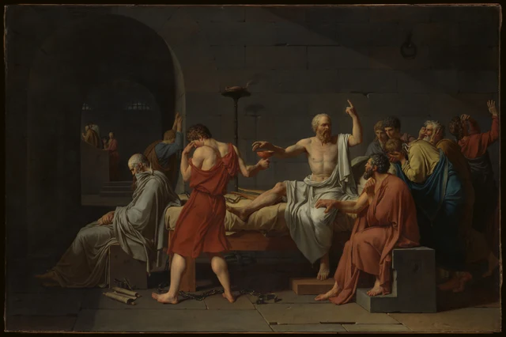

Johannes Vermeer · c. 1664
フェルメール《天秤を持つ女》
空の皿が二つ、卓上には宝飾品、背後には審判。もう一度見れば、この静けさには重みがある。
本文を読む →简 · 繁 · EN · 日本語 · FR · DE · ES · 한국어
NON DUBITO · 美術作品をじっくり見る
まず作品を見て、心を動かされる理由を考える。細部や素材、見る経験から始まる、一篇ずつ読める鑑賞の手引き。
Johannes Vermeer · c. 1664
空の皿が二つ、卓上には宝飾品、背後には審判。もう一度見れば、この静けさには重みがある。
本文を読む →简 · 繁 · EN · 日本語 · FR · DE · ES · 한국어

Pieter Bruegel the Elder · 1565
刈る人、食べる人、眠る人。黄金色の収穫には、いくつもの身体の時間がある。
本文を読む →简 · 繁 · EN · 日本語 · FR · DE · ES · 한국어

Jan van Eyck · c. 1434–1436
天使の言葉はこちらを向き、マリアの返事は逆さになっている。この世界は誰に向けて描かれたのか。
本文を読む →简 · 繁 · EN · 日本語 · FR · DE · ES · 한국어

Leonardo da Vinci · c. 1474–1478
表には顔、裏には賛辞。小さな板を返しながら、名前や称賛では置き換えられない一人を見る。
本文を読む →简 · 繁 · EN · 日本語 · FR · DE · ES · 한국어

Jean Honoré Fragonard · c. 1769
読んでいる姿は見えるのに、本の文章は読めない。黄色い袖、指、視線が伝える集中をたどる。
本文を読む →简 · 繁 · EN · 日本語 · FR · DE · ES · 한국어

Jacques Louis David · 1787
杯はまだ手渡されず、話も終わらない。決意、悲しみ、後世の記述が、一つの牢獄に居合わせる。
本文を読む →简 · 繁 · EN · 日本語 · FR · DE · ES · 한국어

J. M. W. Turner · 1835
月光は港を壮麗にし、火は石炭を積む人を照らす。明るいことと、よく見えることは同じだろうか。
本文を読む →简 · 繁 · EN · 日本語 · FR · DE · ES · 한국어

Mary Cassatt · 1893–1894
目の前をふさぐ紺色の背中と、子どもを支える腕。軽やかな舟遊びを、いくつもの身体が保っている。
本文を読む →简 · 繁 · EN · 日本語 · FR · DE · ES · 한국어